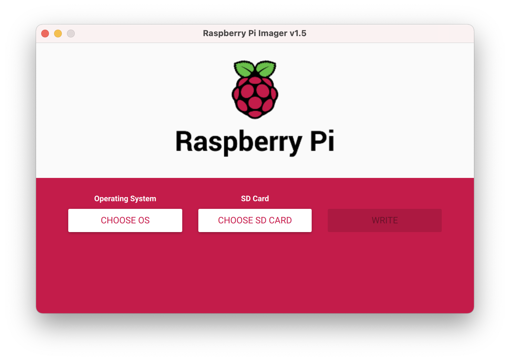
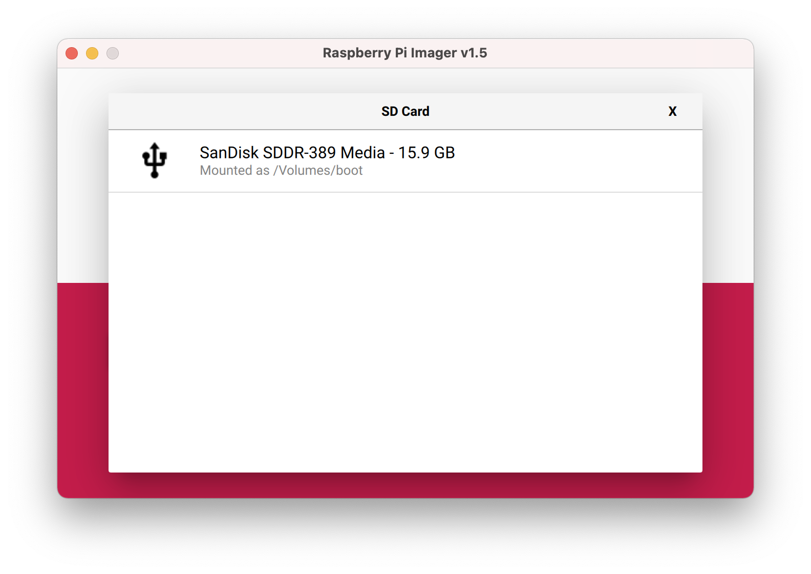
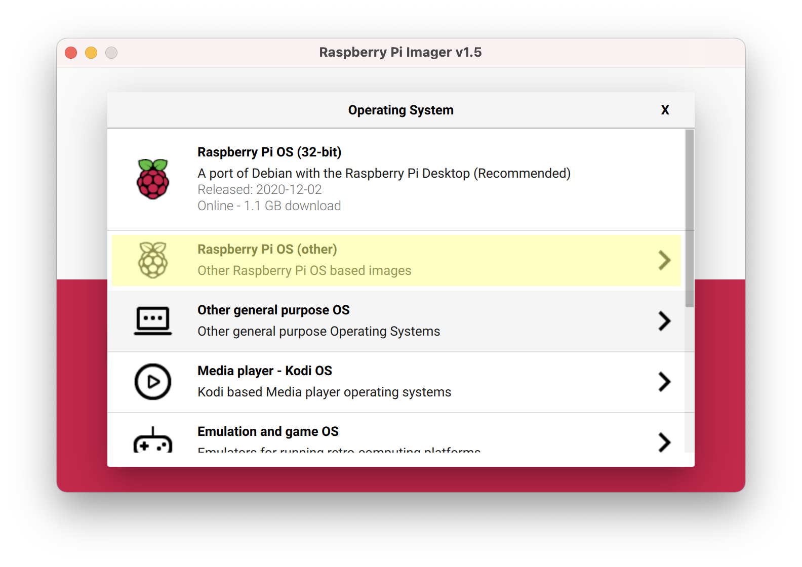
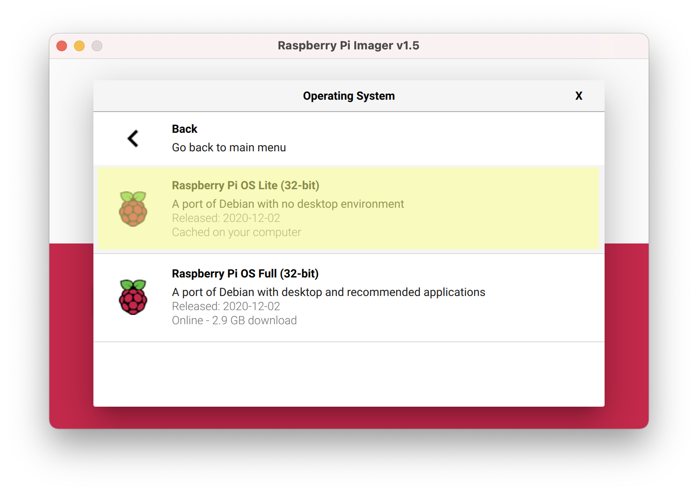
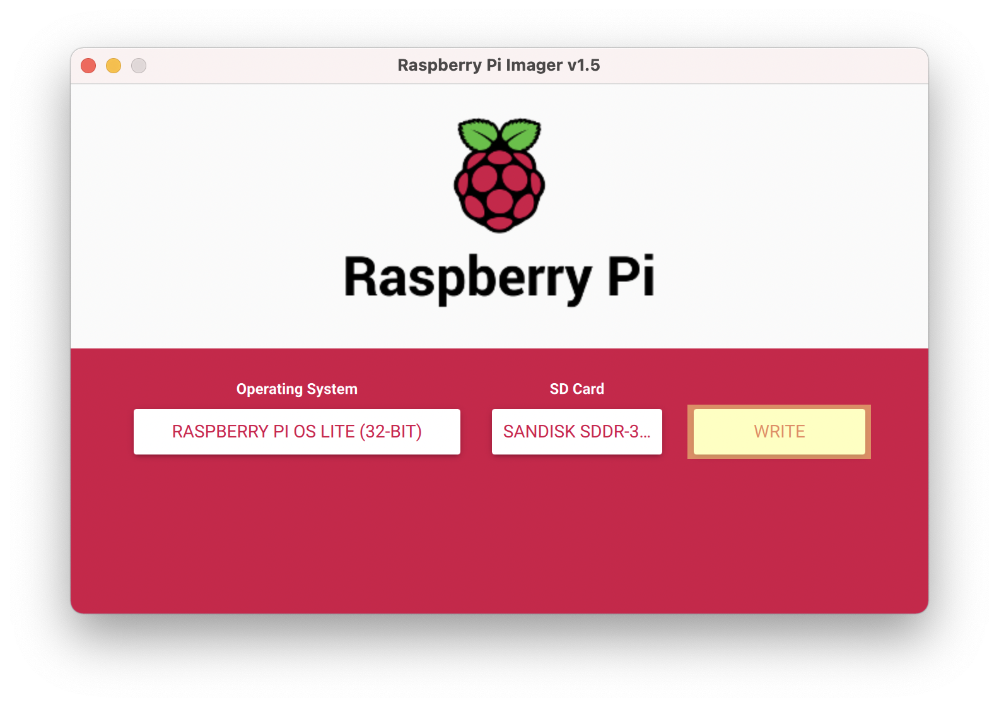
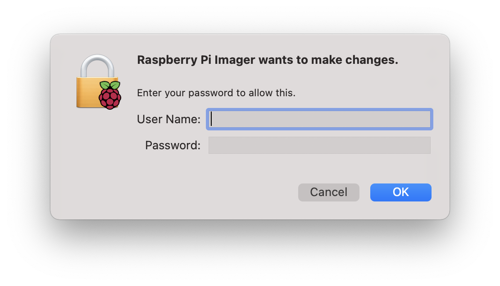
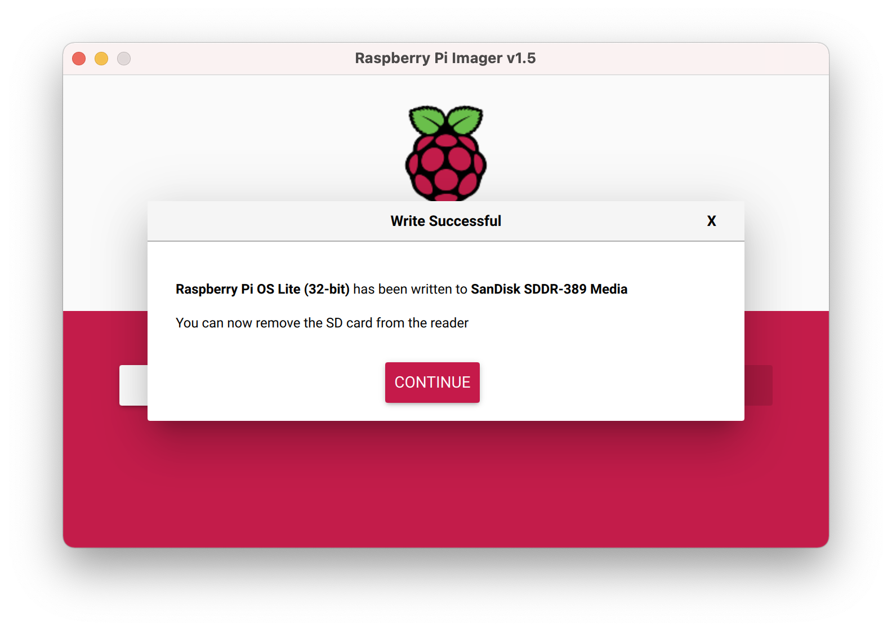
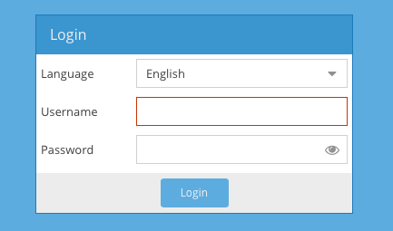
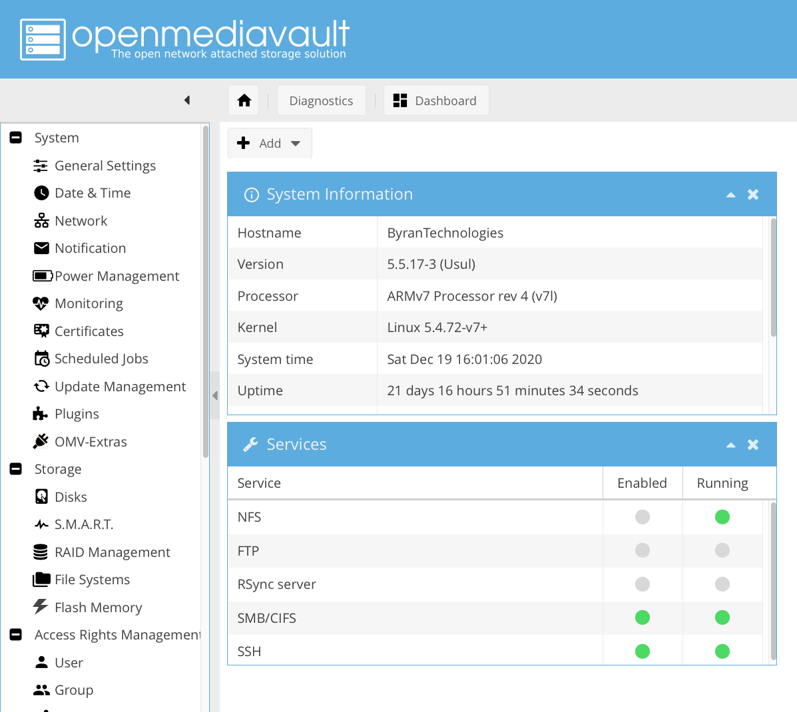

Monday, December 19, 2020
Monday, December 19, 2020
Open Media Vault 5 for Raspberry Pi
Requirements:
Raspberry Pi - any will work, as long as it has network connection Network Connection - best if wired Linux / Mac / Windows 10 device for OS installation and SSH Ethernet Cable - optional if going wireless SD Card - 16 GB or more Storage Devices - SSDs, HDDs, USB thumbdrives, etc. Display - HDMI Mouse and Keyboard OPTIONAL: Case with fan
Installing Raspberry Pi OS Lite
1. Download the Raspberry Pi Imager (RPI Imager) from the Raspberry Pi downloads website. It is available for Mac, Linux and Windows. 2. Plug the SD card into the Linux / Mac / Win 10 device. Open up the RPI Imager.
3. Once opened, choose the SD card.
4. Click Choose OS and select Raspberry Pi OS (other)
5. Choose Raspberry Pi OS Lite (32-bit)
6. Click WRITE
7. It may ask for your username and password. Please enter them.
8. It will take some time to write (depending on how fast your SD card is). When it’s done, eject if needed and plug the SD card into Raspberry Pi. The SD card slot is on the underside of the Raspberry Pi (thin, silver slit).
9. Plug in all the cables. HDMI, keyboard and mouse, power. (Ethernet is optional but strongly recommended). 10. After booting, the terminal should show up. It will ask for your login info. It is recommended that you change the password later. Raspberry pi login: pi Password: raspberry
Installing OMV on the Raspberry Pi
1. Connect to WiFi. Best if wired. 2. Type these 4 commands. The upgrade might take a while. Start a Blender model or something.
sudo apt-get update
sudo apt-get upgrade -y
sudo rm -f /etc/systemd/network/99-default.link
sudo reboot
1. Type (the script may take up to +30 min)
wget -O - https://github.com/OpenMediaVault-Plugin-Developers/installScript/raw/master/install | sudo bash
After the install is done, on the Raspberry Pi, run
hostname -I
2. Enter the output IP address into a browser. 3. Enter admin login. By default,
username: admin
password: openmediavault

4. You should be greeted with the web GUI:
That's it! You have created your own server! However, setting up requires more work; I hope to make a tutorial on that sometime!